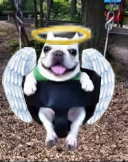
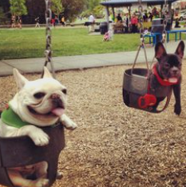
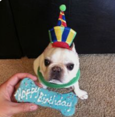

It is with a heavy heart that we announce the passing of Sir Charles Barkey, our cherished canine companion.
Sir Charles was more than just a dog—he was a true friend, confidant, and source of endless joy. His playful antics,
curious nature, and infectious enthusiasm brought light into every room he entered, leaving a lasting impression
on everyone who had the pleasure of meeting him.
From the moment he bounded into our lives, Sir Charles filled our days with laughter and warmth. Whether he was
eagerly chasing after his favorite toy, lounging in the sun, or offering his quiet support, he always knew how to make us
feel loved and appreciated. His loyalty and gentle spirit were unmatched, and he had an uncanny ability to brighten the toughest of days.
Though he may no longer be with us, the love and joy he brought into our lives will never fade. We find comfort in the
beautiful memories we shared with Sir Charles, and his spirit will forever remain in our hearts. Rest in peace,
dear friend—you will be deeply missed, but your legacy of love and happiness will continue to inspire us every day.


